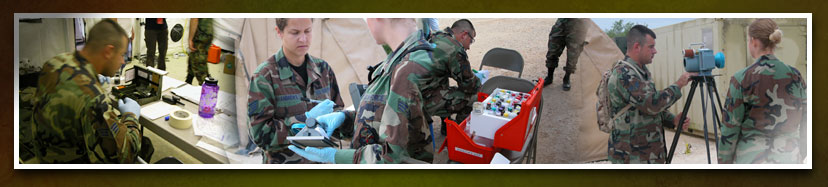

BE Roles in the HRA Process

When conducting an HRA, your role as a BE is to:
- Lead HRA execution.
- Incorporate CBRN and physical threat analysis from intelligence and line functions into HRAs,
- Communicate health risk information and recommend COAs to commanders.
- Ensure involvement in each HRM activity.
- Maintain clear lines of communication with commanders to cross talk emerging and identified health threats, risk controls, and the impact of threats and controls to the mission.